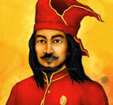
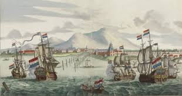
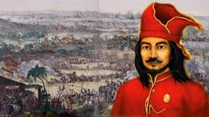

Biografi

Sultan Hasanuddin (Dijuluki Ayam Jantan dari Timur oleh Belanda) (12 Januari 1631 - 12 Juni 1670) adalah Sultan Gowa ke-16 dan pahlawan nasional Indonesia yang terlahir dengan nama Muhammad Bakir I Mallombasi Daeng Mattawang Karaeng Bonto Mangape. Setelah menaiki takhta, ia digelar Sultan Hasanuddin, setelah meninggal ia digelar Tumenanga Ri Balla Pangkana. Karena keberaniannya, ia dijuluki De Haantjes van Het Osten oleh Belanda yang artinya Ayam Jantan dari Timur. Ia dimakamkan di Katangka, Kabupaten Gowa. Ia diangkat sebagai Pahlawan Nasional dengan Surat Keputusan Presiden No. 087/TK/1973, tanggal 6 November 1973
Sultan Hasanuddin lahir di Makassar pada 12 Januari 1631. Dia lahir dari pasangan Sultan Malikussaid, Sultan Gowa ke-XV, dengan I Sabbe Lokmo Daeng Takuntu. Jiwa kepemimpinannya sudah menonjol sejak kecil. Selain dikenal sebagai sosok yang cerdas, dia juga pandai berdagang. Karena itulah dia memiliki jaringan dagang yang bagus hingga Makassar, bahkan dengan orang asing. Hasanuddin kecil mendapat pendidikan keagamaan di Masjid Bontoala. Sejak kecil ia sering diajak ayahnya untuk menghadiri pertemuan penting, dengan harapan dia bisa menyerap ilmu diplomasi dan strategi perang. Beberapa kali dia dipercaya menjadi delegasi untuk mengirimkan pesan ke berbagai kerjaan.
Perjuangan

Pada pertengahan abad ke-17, Kompeni Belanda (VOC) berusaha memonopoli perdagangan rempah-rempah di Maluku setelah berhasil mengadakan perhitungan dengan orang-orang Spanyol dan Portugis. Kompeni Belanda memaksa orang-orang negeri menjual dengan harga yang ditetapkan oleh mereka, selain itu Kompeni menyuruh tebang pohon pala dan cengkih di beberapa tempat, supaya rempah-rempah jangan terlalu banyak. Maka Sultan Hasanuddin menolak keras kehendak itu, sebab yang demikian adalah bertentangan dengan kehendak Allah katanya. Untuk itu Sultan Hasanuddin pernah mengucapkan kepada Kompeni "marilah berniaga bersama-sama, mengadu untuk dengan serba kegiatan". Tetapi Kompeni tidak mau, sebab dia telah melihat besarnya keuntungan di negeri ini, sedang Sultan Hasanuddin memandang bahwa cara yang demikian itu adalah kezaliman.
Pada tahun 1660, VOC Belanda menyerang Makassar, tetapi belum berhasil menundukkan Kesultanan Gowa. Tahun 1667, VOC Belanda di bawah pimpinan Cornelis Speelman beserta sekutunya kembali menyerang Makassar. Pertempuran berlangsung di mana-mana, hingga pada akhirnya Kesultanan Gowa terdesak dan makin lemah, sehingga dengan sangat terpaksa Sultan Hasanuddin menandatangani Perjanjian Bungaya pada tanggal 18 November 1667 di Bungaya. Gowa yang merasa dirugikan, mengadakan perlawanan lagi. Pertempuran kembali pecah pada Tahun 1669. Kompeni berhasil menguasai benteng terkuat Gowa yaitu Benteng Sombaopu pada tanggal 24 Juni 1669. Sultan Hasanuddin wafat pada tanggal 12 Juni 1670 karena penyakit ari-ari.
Kesultanan Gowa
Kesultanan Gowa (kadang disebut Kerajaan Gowa atau Kerajaan Gowa Tallo) atau Kesultanan Makassar adalah sebuah Kesultanan yang berpusat di daerah Sulawesi Selatan, tepatnya di jazirah selatan dan pesisir barat semenanjung yang didiami oleh suku Makassar. Wilayah inti bekas kerajaan ini sekarang berada di bawah Kabupaten Gowa, Kotamadya Makassar, Kabupaten Takalar, kabupaten Maros, sebagian kabupaten Pangkep, kabupaten Bantaeng, kabupaten jeneponto, kabupaten Sinjai, kabupaten Bulukumba, kabupaten Selayar, serta beberapa kerajaan bawahan dan taklukan hampir seluruh kawasan timur Indonesia, sebagian Utara Australia, dan ujung selatan Philipina, 1/3 pulau Borneo.
Berawal dari chiefdom yang didirikan pada awal abad ke-14 (1320). Kerajaan Gowa mencapai puncak kejayaannya bersama Kerajaan Tallo sekitar tahun 1511 hingga 1669, ketika kerajaan ini memegang hegemoni militer dan perdagangan atas wilayah timur Nusantara, termasuk di antaranya sebagian besar Sulawesi, beberapa bagian dari Maluku dan Nusa Tenggara, pesisir timur Kalimantan hingga Wilayah Utara. Dalam prosesnya menjadi kekaisaran maritim, Kerajaan Gowa mengembangkan berbagai inovasi dalam bidang pemerintahan, ekonomi dan militer. Perubahan sosial budaya yang drastis juga terjadi seiring mengeratnya hubungan antara Kerajaan Gowa dan dunia luar, terutama setelah Kerajaan Gowa mengadopsi Islam sebagai agama resmi pada awal 1607.
Kekalahan Kerajaan Gowa dalam Perang Makassar yang terjadi pada tahun 1669 mengakibatkan lepasnya wilayah kekuasaan Kerajaan Gowa di luar Sulawesi Selatan, sementara sebagian kecil wilayahnya diberikan kepada VOC. Meski begitu, Kerajaan Gowa tetap bertahan sebagai negeri merdeka hingga awal abad ke-20, ketika pemerintah kolonial Belanda mengalahkan Gowa dalam Ekspedisi Sulawesi Selatan dan menjadikannya daerah koloni mereka.
Sikap Kepahlawanan

Sultan Hasanuddin adalah raja yang berhasil memimpin Kerajaan Gowa-Tallo menuju puncak kejayaannya. Kerajaan Gowa-Tallo sebelumnya adalah dua kerajaan yaitu Kerajaan Gowa dan Kerajaan Tallo yang kemudian bersatu. Kerajaan ini adalah kerajaan Islam pertama di pulau Sulawesi. Sikap kepahlawan yang harus kita miliki dari Sultan Hasanuddin ialah sikap berani dan pantang menyerah. Sultan Hasanuddin sangat berani menenjang penjajahan Belanda hingga mendapat julukan “Ayam Jantan dari Timur”.